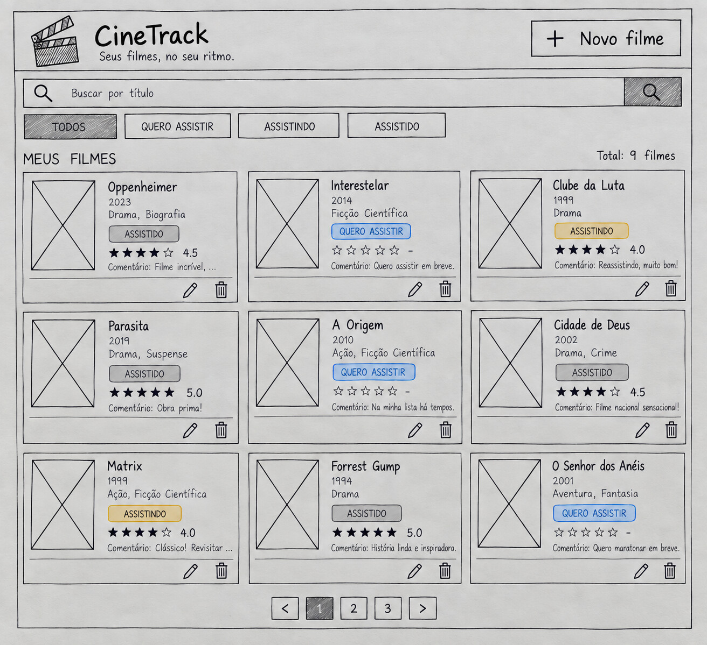

← Voltar
Sobre o CineTrack
Filmes do conjunto canônico do CineTrack
Título
Ano
Gênero
Status
A Origem
2010
Ficção científica
assistido
Parasita
2019
Suspense
assistido
O Auto da Compadecida
2000
Comédia
assistido
Duna: Parte Dois
2024
Ficção científica
assistindo
Interestelar
2014
Ficção científica
quero assistir
Cidade de Deus
2002
Drama
quero assistir

Rascunho da interface do CineTrack: cabeçalho com busca e botão de adicionar,
filtros por status e a lista de filmes em cards.
Como os dados são organizados
Título
Ano
Gênero
Pôster (URL da imagem)
Status (quero assistir, assistindo, assistido)
Nota
Comentário